Chapter 5. 함수¶
'쉽게 풀어쓴 C언어 Express - 천인국' 8장 ~ 9장 학습 내용
1절. 함수 정의
2절. 매개 변수와 반환값
3절. getchar() 함수
4절. 다양한 함수
5절. 모듈화
1절. 함수 정의¶
함수(function)의 개념¶
- 입력을 받아 특정한 작업을 통해 결과를 반환하는 코드
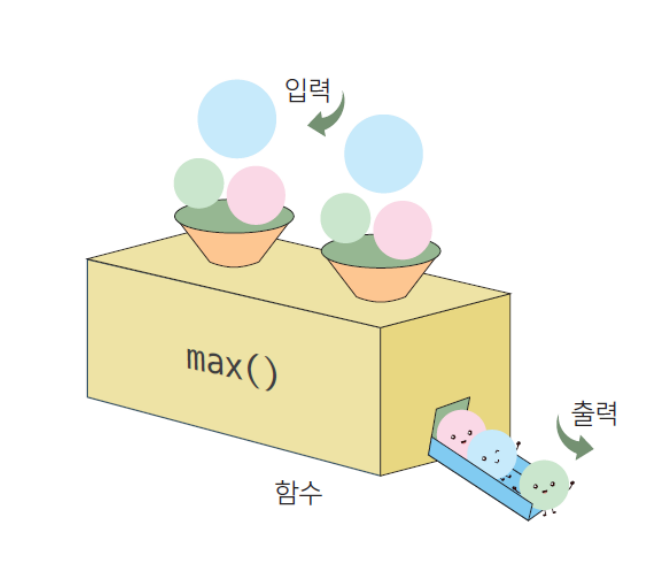
함수가 필요한 이유¶
- 코드의 중복을 피할 수 있기 때문이다.
- 한 번 작성된 함수를 여러 번 재사용할 수 있기 때문이다.
- 함수를 사용하면 전체 프로그램을 모듈로 나눌 수 있다.
- 이로 인해 개발 과정이 쉬워지고 체계적이 되어 유지 보수가 쉬워진다.
- 복잡한 문제를 단순한 부분으로 분해한다.
함수의 특징¶
- 특정한 작업을 수행하기 위한 명령어들의 모임이다.
- 서로 구별되는 이름을 가진다.
- 특정한 작업을 수행한다.
- 입력을 받을 수 있고 결과를 반환한다.
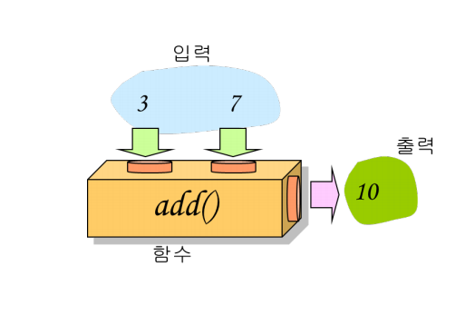
함수의 종류¶
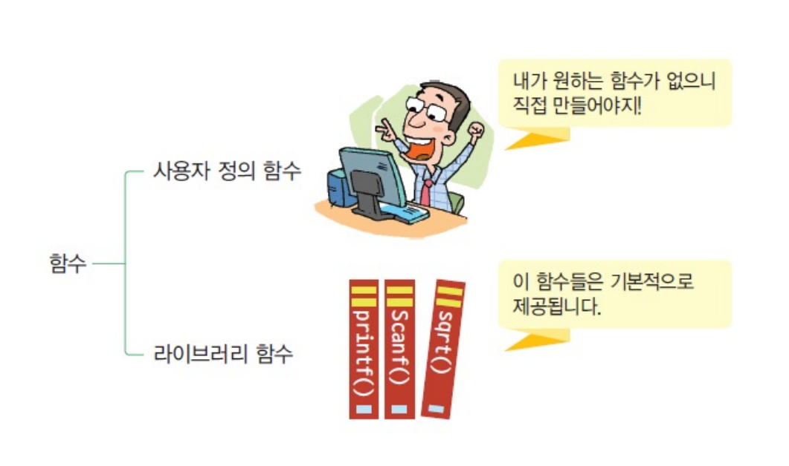
함수의 정의¶
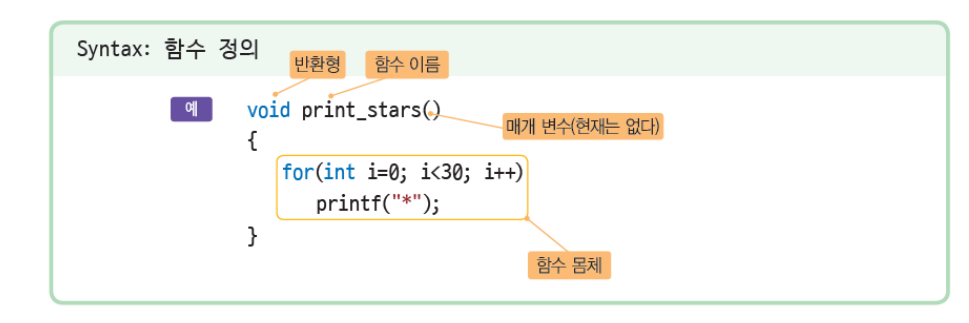
함수의 정의 - 2¶
- 반환형
- 반환형은 함수가 처리를 종류한 후에 호출한 곳으로 반환하는 데이터의 유형을 말한다.
- 함수 이름
- 함수 이름은 식별자에 대한 규칙만 따른다면 어떤 이름이라도 가능하다.
- 함수의 기능을 암시하는 (동사+명사)를 사용하면 좋다.
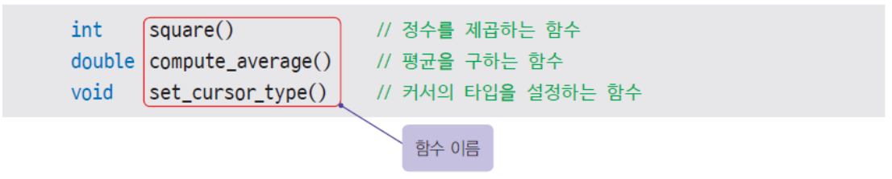
- 함수의 길이
- C에서는 함수의 길이에 아무런 제한을 두지 않는다.
- 이것은 하나의 함수 안에 많은 문장들을 넣을 수 있음을 의미한다.
- 함수의 길이가 지나치게 길면 좋지 않다.
- 만약 함수의 길이가 지나치게 길다면 하나 이상의 작업을 하고 있을 것이다.
- 기본적으로 하나의 함수는 하나의 작업만을 수행한다.
- 함수를 분할하는 것은 좋은 방법이다.
- 보편적으로 30행을 넘지 않도록 하는 것이 좋다.
함수 호출¶
- 함수 호출(function call)
- 함수 호출이란 function_name()와 같이 함수의 이름을 써주는 것이다.
- 함수 안의 문장들은 호출되기 전까지는 전혀 실행되지 않는다.
- 함수를 호출하게 되면 현재 실행하고 있는 코드는 잠시 중단된다.
- 호출된 함수로 이동해서 함수 몸체 안의 문장들이 순차적으로 실행된다.
- 실행이 끝나면 호출한 위치로 되돌아가서 잠시 중단됐던 코드를 실행한다.
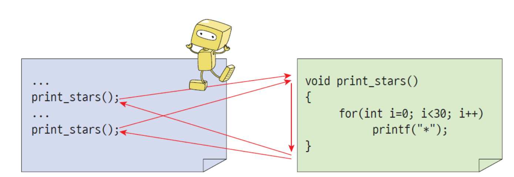
함수의 원형(function prototyping)¶
- 함수의 원형은 컴파일러에게 함수에 대하여 미리 알리는 것을 말한다.
- 함수의 원형은 함수의 이름, 매개변수, 반환형을 함수가 정의되기 전에 미리 알려주는 것이다.
- 함수의 원형은 함수 헤더에 세미콜론(;)을 추가한 것과 동일하다.
- 다만 함수 원형에서는 매개 변수의 이름은 적지 않아도 된다.
- 매개 변수의 자료형만 적어도 된다.
- 일반적으로 함수의 원형을 사용하는 것이 좋다.
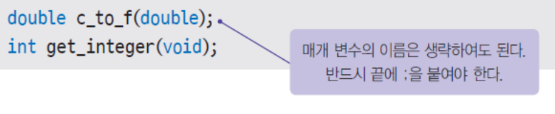
함수 호출 예제¶
// print_start() 함수 2번 호출하기
#include <stdio.h>
void print_stars(); //함수의 원형
int main(void)
{
print_stars();
// print_stars() 함수 호출 1
printf("\nHello World!\n");
print_stars();
// print_stars() 함수 호출 2
printf("\n);
return 0;
}
void print_stars() // 입력할 함수
{
for (int i = 0; i < 30; i++) // i가 30이 될 때까지 반복
printf("*"); // 별 찍기
}
2절. 매개 변수와 반환값¶
매개 변수와 반환값¶
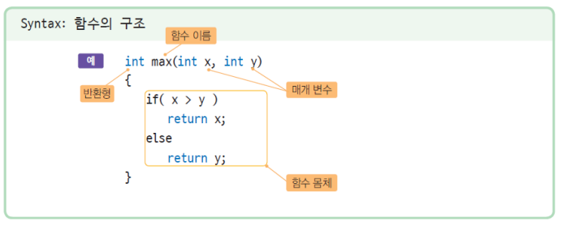
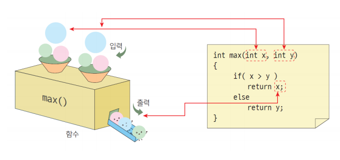
매개 변수와 인수¶
- 인수(argument) : 호출 프로그램에 의하여 함수에 실제로 전달되는 값
- 매개 변수(parameter) : 인수를 전달받는 변수
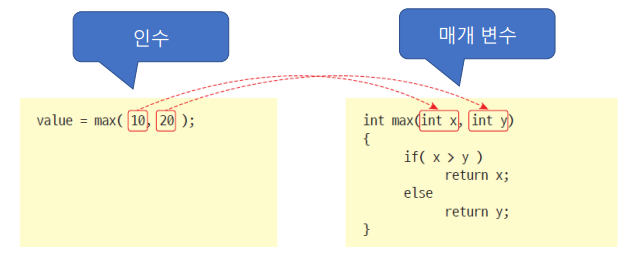
- 만약 매개 변수가 없는 경우에는 매개 변수 위치에 void를 써주거나 아무 것도 적지 않는다.
- 함수가 호출될 때마다 인수는 달라질 수 있다.
- 매개 변수의 개수는 정확히 일치해야 한다.
- 매개 변수의 개수와 인수의 개수가 일치하지 않으면 오류가 발생한다.
반환값(return value)¶
- 반환값은 함수가 호출한 곳으로 반환하는 작업의 결과값이다.
- 값을 반환하려면 return 문장 다음에 수식을 써준다.
- 인수는 여러 개가 있을 수 있으나 반환값은 하나만 가능하다.
최댓값 반환 예제¶
#include <stdio.h>
int max(int x, int y);
int main(void){
int x, y, larger;
printf("input 2 numbers of type integer : );
scanf_s("%d %d", &x, &y);
larger = max(x, y); // 변수 larger에 함수값 저장
printf("max value is %d.\n", larger);
return 0;
}
int max(int x, int y){
if (x > y)
return x;
else
return y;
}
반환값 함수 get_integer() 예제¶
- 함수 사용 예시
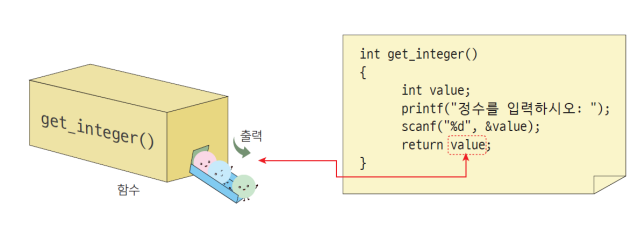
#include <stdio.h>
int get_integer();
int main(void)
{
int get_integer();
return 0;
}
int get_integer(){
int value;
printf("input number of type integer : ");
scanf_s("%d", &value);
return value;
}
수학적인 계산 함수 생성 예제¶
```C
include ¶
int get_integer(void);
int combination(int n, int r);
int factorial(int n);
int main(void)
{
int x, y;
x = get_integer();
y = get_integer();
printf("C(%d, %d) = %d \n", x, y, combination(a, b));
// C(x, y) = 조합값 의 형태로 출력
return 0;
} int combination(int n, int r) // 조합 계산 함수 { return (factorial(n)/factorial(r) * factorial(n - r))); } int get_integer(void) // 정수 입력 함수 { int n;
printf("정수를 입력하시오 : ");
scanf_s("%d", &n);
return n;
} int factorial(int n) { int i; long result = 1; // 결과값을 1로 초기화, 곱셈이기 때문에 0이 아닌 1로 초기화하는 것 for(i = 1; i <= n; i++) result *= i; // 결과값이 n이 되기 전까지 i 곱셈, 1부터 n까지 곱하는 것 return result; } ```
소수 찾는 예제¶
```C // 주어진 숫자가 소수인지 결정하는 프로그램
include ¶
int get_integer(void);
int is_prime(int n);
int main(void){
int n;
n = get_integer();
if (is_prime(n) == 1) // 만약 소수인지 판단하는 함수에서의 결과값이 1이라면(1일 때 소수)
printf("%d은(는) 소수!\n", n);
else // 소수가 아닐 경우
printf("%d은(는) 소수가 아님!\n", n);
return 0;
}
int get_integer(void) // 정수 입력 함수
{
int n;
printf("정수를 입력하시오 : ");
scanf_s("%d", &n);
return n;
}
int is_prime(int n){
int i;
for (i = 2; i < n; i++){
if (n % i == 0) // n을 i로 나눈 나머지가 0이라면
return 0; // 소수가 아님을 반환
return 1; // if문에 해당되지 않는다면 소수임
}
}
```
3절. getchar() 함수¶
getchar() 함수¶
- 문자를 입력받아야 하므로 변수를 설정하고 scanf()에 서식지정자로 %c를 설정한다.
- scanf()에서 %c는 문자 한 개만 입력받을 수 있다.
- 따라서 문자를 여러 개 입력하더라도 한 개만 저장되고 나머지는 모두 무시된다.
- 입력되는 문자는 첫 번째 문자 뿐이다.
// using scanf()
#include <stdio.h>
int main(void){
char c1;
printf("문자를 입력하세요 : ");
scanf_s("%c", &c1);
printf("%c\n", cl);
return 0;
}
- getchar()가 실행되면 문자열 또는 문자를 입력받는다.
- 문자열이나 문자가 바로 저장되는 것이 아니라, 입력 버퍼에 저장된다.
- getchar()의 반환값으로 입력 버퍼에서 문자 한 개를 꺼내서 저장한다.
- 앞선 scanf()와 마찬가지로 문자 여러 개를 입력받아도 첫 번째 문자만 반환한다.
// using getchar()
#include <stdio.h>
int main(void){
char c1 = getchar();
printf("%c\n", cl);
return 0;
}
getchar() 함수 - 2¶
- getchar() 함수는 메뉴에서 사용자가 입력한 문자를 읽어들이는데 사용한다.
- 특정한 값을 입력한 후, 엔터키를 눌러야 입력된 값을 프로그램이 처리한다.
- 이 때, 엔터키를 누르면 버퍼에 개행문자(\n)이 저장된다.
- 다음 getchar()함수가 호출될 때 먼저 개행문자가 호출되면서 입력을 받지 못하는 문제가 발생할 수 있다.
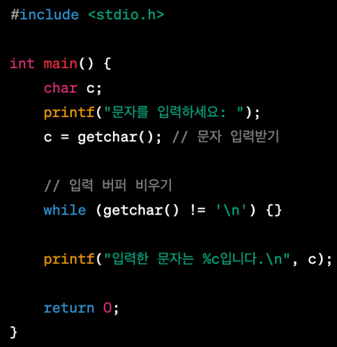
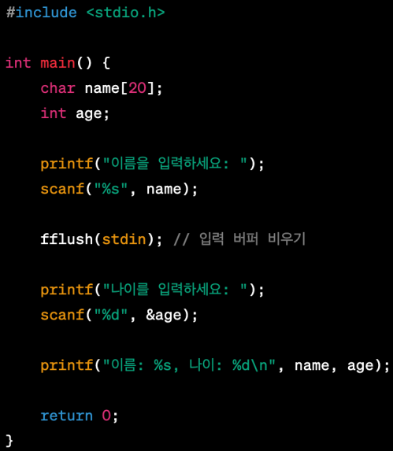
온도 변환기 예제¶
#include <stdio.h>
void printMenu();
double C2F(double C_temp);
double F2C(double F_temp);
int main(void)
{
char choice;
double temp;
while(1){ // 실행하는 사람이 q를 입력할 때까지 무한 반복
printMenu();
printf("select menu : ");
choice = getchar(); // getchar 함수를 통해 choice 변수의 값을 입력받음
if (choice == 'q') // choice에 q가 입력된다면
break; // 반복문 탈출
else if (choice == 'c') // choice에 c가 입력된다면
{
printf("섭씨온도 : ");
scanf_s("%d", &temp); // 입력받은 섭씨온도를
printf("화씨온도 : %lf\n", C2F(temp)); // 화씨온도로 바꿔서 출력
}
else if (choice == 'f') // choice에 f가 입력된다면
{
printf("화씨온도 : ");
scanf_s("d", &temp); // 입력받은 화씨온도를
printf("섭씨온도 : %lf\n", F2C(temp)); // 섭씨온도로 바꿔서 출력
}
getchar();
}
return 0;
}
void printMenu() // 시작 메뉴 출력하는 함수
{
printf("===========================\n");
printf("'c' 섭씨온도에서 화씨온도로 변환\n");
printf("'f' 화씨온도에서 섭씨온도로 변환\n");
printf("'q' 종료\n");
printf("===========================\n");
}
double C2F(double C_temp) // 섭씨온도를 화씨온도로 변환한 함수
{
return 9.0 / 5.0 * c_temp + 32;
}
double F2C(double F_temp) // 화씨온도를 섭씨온도로 변환한 함수
{
return (F_temp - 32.0) * 5.0 / 9.0;
}
4절. 다양한 함수¶
라이브러리 함수(library function)¶
- 컴파일러에서 제공하는 함수
- 표준 입출력
- 수학 연산
- 문자열 처리
- 시간 처리
- 오류 처리
- 데이터 검색과 정렬
난수 함수(rand())¶
- 난수(random number)는 규칙성 없이 임의로 생성되는 수
- 암호학이나 시뮬레이션, 게임 등에서 필수적이다.
- rand()
- 난수를 생성하는 함수
- 0부터 RAND_MAX까지의 난수 생성
로또 번호 생성기(난수 함수를 사용한 대표적인 예제)¶
- 로또 번호는 1부터 45까지의 숫자 6개로 이루어진다.
- 배열과 선택정렬을 이용해서 로또 번호를 깔끔하게 출력해보자.
#include <stdio.h> #include <stdlib.h> #include <time.h> #define MAX 45 #define SIZE 6 void array1(int list[]); int main(void) { int rotto[SIZE]; // 로또번호를 저장할 배열 int i, j; srand((unsigned)time(NULL)); // 난수 발생기 for (i = 0; i < SIZE; i++) // 6개의 숫자를 생성 { rotto[i] = (rand() % MAX) + 1; // 배열에 로또번호를 저장 for (j = 0; j < i; j++) { if (rotto[i] == rotto[j]) i--; } } array1(rotto); for (i = 0; i < SIZE; i++){ printf("%d ", rotto[i]); // 차례대로 로또번호를 출력 } return 0; } void array1(int list[]) { int i, j, min, temp; for (i = 0; i < SIZE - 1; i++) // 마지막에는 자동으로 큰 값이 배치됨 { min = i; // 가장 작은 값에 for문의 변수 i를 저장 for (j = i + 1; j < SIZE; j++) // j의 값에 i에 1을 더한 수를 저장하고 SIZE 만큼 반복 // i의 값에 1을 더한 인덱스의 값 // 만약 i가 0일 때, list[0]을 가리킴 // 그렇다면 j는 list[1]을 가리키게 됨 { if (list[j] < list[min]) // 만약 list[1] < list[0] 이라면 min = j; // 가장 작은 값은 j가 됨 } temp = list[i]; // 임시변수에 list[i]를 저장 list[i] = list[min]; // list[i]에 list[min]을 저장 list[min] = temp; // list[min]에 temp값(list[i])을 저장 } }
표준 라이브러리 함수(수학 함수)¶
- 수학 함수들에 대한 원형은 헤더파일 math.h에 있다.
- 수학 함수는 일반적으로 double형의 매개 변수와 반환값을 가진다.
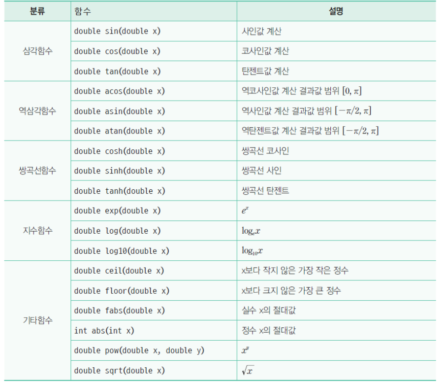
floor()함수와 ceil()함수¶
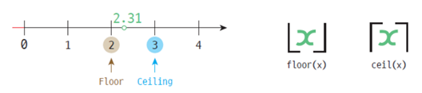
* floor()은 바닥, ceil()은 천장을 나타내는 함수이다. * 만약 1.6가 입력됐을 때, floor()함수를 이용하면 1.0이 출력된다. * 앞과 마찬가지로 1.6가 입력됐을 때, ceil()함수를 이용하면 2.0이 출력된다.#include <stdio.h>
int main(void)
{
double result, value = 1.6; // result와 value의 값을 1.6으로 초기화
result = floor(value);
printf("%lf", result); // result의 값은 1.0이다.
result = ceil(value);
printf("%lf", result); // result의 값은 2.0이다.
return 0;
}
기타 함수¶
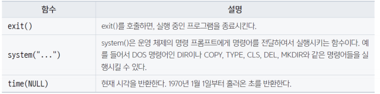
시간 맞추기 게임 예제¶
#include <stdio.h>
#include <time.h>
int main(void)
{
unsigned long start, end; // 부호없는 수로 초기화한다.
start = time(NULL);
// start에 현재 시각을 반환하는 time(NULL)을 저장한다.
printf("종료하고 싶다면 아무 키나 누르세요. \n");
while (1) // 무한 반복
{
if (getchar()) // 만약 아무 문자를 입력받는다면,
break; // 프로그램을 종료한다.
}
printf("종료되었습니다.\n");
end = time(NULL);
// end에 현재 시각을 반환하는 time(NULL)을 저장한다.
printf("경과된 시간은 %d초입니다. \n", end - start);
// 두 시간의 차이를 출력한다.
return 0;
}
5절. 모듈화¶
모듈화¶
- 모듈 내에서는 최대의 상호 작용이 있어야 하고 모듈 사이에는 최소의 상호 작용만 존재해야 한다.
- 만약 모듈과 모듈 사이의 연결이 복잡하다면 모듈화가 잘못된 것이다.
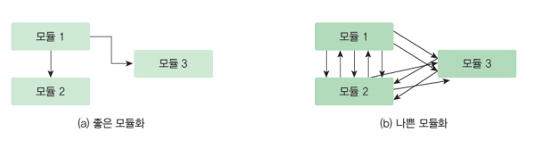